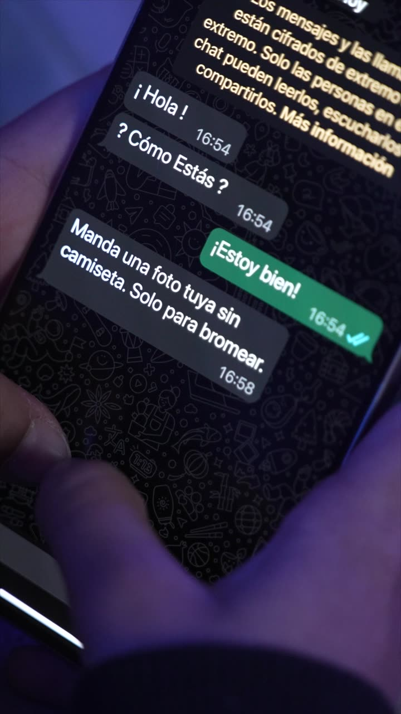
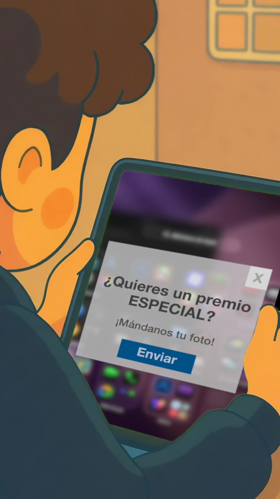
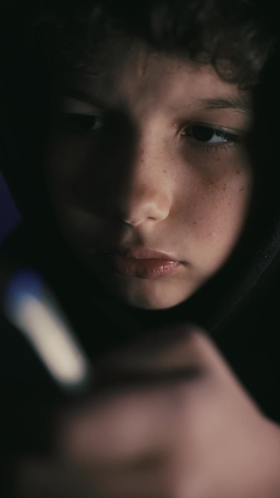

1 · Realidad
¿Qué es el ciberbullying?
Es cuando una o varias personas usan la tecnología para agredir, humillar, excluir o intimidar a alguien, de forma repetida y a propósito, y a esa persona le cuesta defenderse.
Gráfico · Las 3 claves juntas
jóvenes de 30 países dice haber sufrido acoso en internet, y 1 de cada 5 faltó a la escuela por eso.Encuesta UNICEF citada en Basta de Silencio Teen 2025
de las personas de Latinoamérica sufrió algún tipo de acoso digital en 2023.Kaspersky, 2024, citado en la revista Basta de Silencio
¿Por qué duele distinto que el bullying cara a cara?
No tiene horario
Te sigue hasta tu casa y tu cama. Una amenaza puede llegar a cualquier hora, y por eso el miedo y la ansiedad no se apagan.
Tiene mucho público
Un grupo de 40 personas, una historia que ven cientos. La vergüenza se multiplica por cada persona que lo ve.
Queda guardado
Capturas, reenvíos, descargas. Lo que se sube puede quedar para siempre, aunque se borre la publicación original.
No se ve la cara del otro
Detrás de una pantalla cuesta darse cuenta del daño, y es más fácil escribir cosas que nunca dirías en persona.
Parece anónimo, pero no lo es
Las cuentas falsas, la navegación privada o una VPN no te hacen invisible. Las plataformas y la justicia pueden rastrear quién fue.
Una broma
- Se ríen todos, también la otra persona.
- Si alguien dice "basta", se termina.
- No se reenvía para que la vea más gente.
Ciberbullying
- Uno solo no se ríe, o se ríe para no quedar mal.
- Aunque pida que paren, sigue o empeora.
- Se comparte para que lo vean más personas.
Ciclo básico
En los primeros años de la secundaria muchas cosas pasan en el grupo de WhatsApp del curso y en los juegos online. Un sticker con tu cara editada, un audio burlándose de cómo hablás o armar "el grupo sin vos" ya son formas de ciberbullying. Que lo hagan "todos" no lo vuelve normal.
Ciclo superior
A esta edad el acoso suele ser más difícil de ver: cuentas de "exposed" anónimas, videos recortados fuera de contexto, encuestas en historias para humillar a alguien, o comentarios que se disfrazan de "opinión". El libro Normosis habla de esto: normalizamos cosas destructivas porque las vemos todo el tiempo. Que sea común no lo vuelve aceptable.
Juego 1 de 6
¿Broma o ciberbullying?
Te mostramos mensajes de un grupo del curso y decidís, uno por uno, si es una broma o si cruzó la línea.
Situaciones más grises: un "exposed", un meme de un profe, una encuesta en historias. Decidís y justificás con las 3 claves.
2 · Reconocer
Las formas que puede tomar
Ponerle nombre a lo que pasa ayuda a darse cuenta antes y a explicarle a un adulto qué está ocurriendo.
Hostigamiento
Insultos, burlas o amenazas que llegan una y otra vez, por privado o en los comentarios.
"Nadie te quiere acá", todos los días, desde distintas cuentas.
Exclusión
Dejar a alguien afuera a propósito y que se note: sacarlo del grupo, armar otro sin esa persona, ignorarlo en masa.
Crear "1°A (sin Agus)" y mandar fotos de la salida.
Humillación pública
Memes, stickers, fotos o videos editados para burlarse de alguien y que circulen.
Un video tuyo tropezando, con música de risa, en TikTok.
Suplantación
Hacerse pasar por otra persona con una cuenta falsa o entrando a su cuenta para publicar cosas en su nombre.
Un perfil con tu foto que le escribe cosas feas a tus amigos.
Exponer datos (doxing)
Publicar sin permiso información privada: dirección, teléfono, colegio, horarios o capturas de chats privados.
Subir la captura de lo que le contaste a una amiga en confianza.
Haters y trolls
Comentarios hechos para provocar, hacer enojar y generar pelea. Contestarles les da lo que buscan.
Comentar "qué asco" en cada foto que subís.
"Juegos" y desafíos que manipulan
Alguien que da órdenes en un grupo o juego y amenaza con excluirte o ridiculizarte si no cumplís retos peligrosos o humillantes.
"Si no subís el video haciendo esto, te sacamos del clan."
Cancelación
Un grupo expone y estigmatiza a alguien, muchas veces con cosas sacadas de contexto. Puede pasar de las redes a ataques en persona.
Una captura vieja que se viraliza con "funemos a esta persona".
Ciberstalking y control
Vigilar de forma obsesiva lo que alguien hace online: exigir contraseñas, controlar la ubicación, revisar con quién habla. Pasa mucho en parejas, y no es amor.
"Pasame tu ubicación en tiempo real o es porque me ocultás algo."
Difusión de imágenes íntimas y sextorsión
Compartir fotos o videos íntimos sin consentimiento, o amenazar con difundirlos para pedir más fotos o dinero. Hoy con IA pueden fabricar imágenes falsas (deepfakes) para chantajear.
"Si no me mandás otra, la paso al grupo." La culpa nunca es de quien aparece en la imagen.
Ojo con esto: grooming
El grooming no es ciberbullying, pero también es violencia digital y es un delito. Es cuando una persona adulta contacta a un chico o una chica por internet para ganarse su confianza con fines sexuales. Muchas veces se hace pasar por alguien de tu edad.
Señales de alerta: te pide que lo mantengas en secreto · pasa muy rápido a temas personales · te pide fotos · quiere hablar por otra app o por videollamada a solas · te pregunta dónde vivís o si estás solo o sola · te hace regalos como monedas o skins del juego.
En la revista Basta de Silencio Teen hay una historia real: una "chica" que decía ser amiga de las compañeras de curso le pidió a una nena que fuera al baño para hacer una videollamada y "mostrarle un juego". Ella les contó a sus padres. Era un hombre adulto. Contar a tiempo la protegió.
Los abusadores pueden tardar menos de 20 segundos en captar la atención de alguien. Las puertas de entrada más comunes son los juegos online y los mensajes privados. Si a vos o a alguien menor que vos le pasa, no lo resuelvas solo: hablalo con un adulto y denuncialo.


Infografía · Cómo avanza el grooming
- ContactoTe escribe en un juego o una red. Dice tener tu edad y te elogia.
- Confianza"Te entiendo", "sos especial". Te hace regalos, como monedas o skins.
- Secreto"No le cuentes a nadie". Te pide pasar a otra app o hablar a solas.
- PedidosFotos, videollamadas, datos de dónde vivís o si estás solo.
- ChantajeAmenaza con mostrar lo que mandaste si no seguís.
Mirá el video
Violencia digital: no es ficción
El video de la campaña para adolescentes muestra cómo empieza el contacto por chat y titulares de noticias reales de distintos países sobre abuso infantil en internet.
Después de verlo, pensá: ¿qué señales de alerta aparecen en el chat? ¿Qué podría haber hecho el chico en ese momento? ¿A quién le podría haber contado?
Juego 2 de 6
Memotest digital
Unís cada forma de acoso con su ejemplo, dando vuelta las tarjetas de a pares.
Unís cada término con su definición y su ejemplo, contra reloj, incluyendo cancelación, ciberstalking y sextorsión.
3 · Roles
Nadie es solo espectador
En cada situación de ciberbullying hay tres lugares posibles. El más poderoso para cambiar lo que pasa es el de quienes miran.
Publica, insulta, edita la foto o arma el grupo. A veces lo hace para buscar aprobación o likes, o por enojo, y a veces sin pensar en el daño.
Recibe los ataques. Suele sentir vergüenza y miedo, y por eso muchas veces no cuenta nada. Nunca es su culpa.
Son la mayoría. Lo que hacen decide si el acoso crece o se apaga.
Gráfico · Lo que hacen los testigos cambia el final
¿Por qué alguien acosa?
Entender las razones no lo justifica, pero ayuda a prevenirlo. Estas son las más comunes según el material de la campaña:
Buscar aceptación
Querer likes, seguidores o caerle bien al grupo, aunque sea a costa de otra persona.
Sentir poder
Creer que el anonimato da poder y que no hay consecuencias.
Falta de empatía
No ponerse en el lugar del otro, sobre todo porque no se le ve la cara.
Problemas propios
Estrés, enojo o tristeza que se descargan con alguien más.
Imitar
Hacer lo que hacen los demás para no quedar afuera.
Atacar a alguien para tener visibilidad no trae una satisfacción real. Al contrario, muestra la falta de autoestima de quien ataca. Y quien agrede también puede terminar siendo atacado cuando otros contraatacan.
Ciclo básico · Una historia
Lucas, de 12 años, quiso hacer reír a sus amigos y mandó al grupo del curso un comentario hiriente sobre Javier, con stickers para burlarse. "Era una broma." Esa tarde, la mamá de Javier vio el mensaje en su celular. Javier le contó todo y juntos hablaron con el profesor, que habló del tema en clase. Lucas se dio cuenta de que la broma había ido demasiado lejos.
- ¿Te animarías a decirle eso a alguien en la cara?
- ¿Pensaste que cualquiera puede reenviar lo que escribís, o que lo pueden ver sus padres?
- ¿Cómo creés que se sintió Javier esa noche?
Ciclo superior · ¿Y si fui yo?
A todos nos puede pasar estar del lado equivocado: un comentario impulsivo, un "jaja" en un grupo, un reenvío. Lo importante es frenar y reparar.
- Borrá lo que publicaste o compartiste, y pedí a otros que lo borren.
- Pedí disculpas en privado. Si el daño fue público, la disculpa también puede serlo.
- Hablá con un adulto si la situación se fue de las manos.
- Pensá antes de responder: dos, tres, cuatro veces antes de una respuesta sarcástica o agresiva.
Juego 3 de 6
El chat del curso
Un chat simulado con tres situaciones del curso. En cada una elegís qué hacer y ves qué provoca tu respuesta.
Una historia con decisiones: sos testigo de un "exposed". Cada elección cambia el final para la persona expuesta.
4 · Resultados
Lo que provoca, aunque no deje marcas
Las agresiones digitales no se ven, pero pueden ser tan dolorosas como un golpe. Quien las sufre muchas veces lo vive solo, de noche, con el celular en la mano y sin contarle a nadie.
Afectan tres áreas de la vida:

Psicológico
Por dentro
- Ansiedad, miedo y tristeza constantes
- Vergüenza y baja autoestima
- Sentir que no hay salida
Físico
En el cuerpo
- Problemas para dormir
- Dolor de cabeza o de panza
- Cambios en la forma de comer y cansancio
Social
Con los demás
- Aislarse de amigos y familia
- Faltar al colegio o bajar las notas
- Dejar actividades que antes le gustaban
Diagrama · El círculo del estrés digital
Ciclo superior · Qué pasa en el cerebro
Cuando el cerebro detecta una amenaza, libera cortisol para preparar al cuerpo para "luchar o huir". Frente a una amenaza virtual no hay a quién enfrentar ni de dónde escapar, así que esa preparación no se descarga y queda un estrés continuo. Si se repite, puede llevar a ansiedad, depresión o estrés postraumático.
| Sustancia | Qué hace | Cómo se relaciona con lo digital |
|---|---|---|
| Dopamina | Motivación y recompensa, placer inmediato | Cada like, notificación o nivel nuevo la dispara. Por eso cuesta soltar el celular. |
| Cortisol | Alerta ante el peligro | Se mantiene alto con el acoso y con las relaciones que generan ansiedad. |
| Serotonina | Alegría y bienestar duradero | Crece con interacciones sanas y actividades que valoramos. |
| Oxitocina | Vínculo, confianza y seguridad | Viene de estar cerca de personas que te quieren, cara a cara. |
| Endorfina | Calma, alivia el estrés y el dolor | Se libera con el ejercicio y la risa. |
Diagrama · El ciclo de la dopamina
Cambiá la felicidad eufórica de la dopamina por la plena de la serotonina. Cambiá el cortisol por vínculos (oxitocina) y risas (endorfina).
Señales de que un amigo o amiga lo está pasando mal
- Se aísla o deja de juntarse con el grupo
- Cambia de humor de golpe
- Se pone mal o nervioso al recibir mensajes
- Deja de usar el celular de repente, o lo esconde
- No quiere ir al colegio
- Borra o cierra sus cuentas
Si sentís que no hay salida
El acoso puede hacer sentir que nada va a mejorar. Las personas que sufren ciberbullying tienen el doble de riesgo de tener pensamientos de no querer vivir. Si te pasa, no estás solo ni sola, y se puede salir.
Hablá hoy con un adulto de confianza. En una emergencia llamá al 911. En CABA y Gran Buenos Aires podés llamar al 135 (Centro de Asistencia al Suicida). También está la Línea 102 para chicos y adolescentes.
Juego 4 de 6
Detectá las señales
Leés cómo está un compañero durante una semana y marcás qué señales muestran que necesita ayuda.
Clasificás cada efecto en su área: psicológico, físico o social, y ves por qué.
5 · Reaccionar
Qué hacer, paso a paso
Diagrama de flujo · ¿Qué hago?
- No respondas
- Sacá capturas
- Bloqueá y reportá
- Contáselo a un adulto
- No lo reenvíes
- Escribile en privado
- Reportá
- Avisale a un adulto
- No respondas ni contraataques
Contestar alimenta el odio y te puede dejar más expuesto. Respirá antes de hacer nada.
- Guardá las pruebas
Hacé capturas de pantalla donde se vea el usuario, la fecha y el mensaje, y guardá los links. Hacelo antes de bloquear.
- Bloqueá y denunciá en la plataforma
Todas las redes y los juegos tienen la opción de reportar. Usala sin miedo.
- Contáselo a un adulto de confianza
Tu familia, un profe, el preceptor o el equipo de orientación. Si no te ayuda, insistí con otra persona hasta encontrar a alguien que sí.
- Acordate: la culpa no es tuya
Nadie merece pasar por esto. Tu valor no depende de comentarios, likes ni opiniones.
- No lo sigas
No reenvíes, no des like, no mandes "jaja" ni stickers. Cortar la cadena ya ayuda.
- Escribile en privado a quien lo sufre
Algo simple como "vi lo que pasó, ¿estás bien? No estás solo". Para esa persona puede cambiarlo todo.
- Reportá la publicación
Los reportes son anónimos. Cuantas más personas reportan, más rápido se borra.
- Avisale a un adulto
Si sigue pasando, salí del grupo y contale a un docente o a tu familia. Llevá capturas.
- No te expongas solo
Confrontar en el grupo puede empeorar las cosas. Buscá apoyo de otros que piensen como vos.
- Frená
Reconocer que te equivocaste es el paso más difícil y el más importante.
- Borrá lo que publicaste
Y pedí a quienes lo reenviaron que también lo borren.
- Pedí perdón
Sin excusas como "era una broma". Si el daño fue público, la disculpa también puede serlo.
- Hablá con un adulto
Te puede ayudar a reparar el daño y a entender qué te llevó a hacerlo.
Ciclo básico
Tus padres o tutores son tus mejores aliados. En la historia de la revista Teen, la chica que contó a tiempo quedó protegida, y otra compañera a la que le pasó lo mismo no se animó a contarlo por vergüenza. Contar no es "botonear": es cuidarte y cuidar a otros.
Ciclo superior
Responder sin violencia también es una herramienta. La Comunicación No Violenta propone escuchar, decir lo que sentís y lo que necesitás, sin atacar. "La blanda respuesta calma la ira, pero la palabra áspera aumenta el furor" (Proverbios 15:1). Si el caso es grave (amenazas, imágenes íntimas, extorsión), además de reportar podés hacer la denuncia formal: llamá al 137, que te orienta, o acercate a la comisaría o la fiscalía con tus capturas.
Juego 5 de 6
Ordená los pasos
Tocás las tarjetas en orden para armar qué hacer si te pasa, y descubrís por qué las capturas van antes de bloquear.
Test de 5 situaciones de "Alerta digital" (revista Teen): elegís A, B o C y al final ves tu nivel.
6 · Resguardarte
Cuidarte antes de que pase
Antes de publicar, preguntate
¿Quiero que cualquier persona lo vea?
¿Sé quién puede verlo?
¿Estoy seguro de que nadie podría usarlo para hacerme daño?
Sí a las tres: publicá
Si en alguna dudás o la respuesta es "no", mejor no lo publiques.
Si no lo dirías arriba de un escenario, no lo digas en tus redes.
- Cuenta privadaRevisá quién puede ver tus publicaciones, escribirte y etiquetarte.
- Contraseñas fuertes y distintasUna para cada red, y activá la verificación en dos pasos.
- Ubicación apagadaNo compartas dónde estás en tiempo real, ni la de tus amigos sin preguntarles.
- Desconocidos, noNo aceptes solicitudes de gente que no conocés en persona, aunque tengan amigos en común.
- Fotos íntimas, nuncaUna vez enviadas pueden quedar para siempre, ser reenviadas o manipuladas con IA. Tu intimidad vale demasiado.
- Verificá antes de compartirSi algo da miedo o enoja mucho, buscá en fuentes confiables antes de reenviarlo. Las fake news también lastiman.
- Poné límites de tiempoNada de pantallas en las comidas ni antes de dormir. Probá un "detox digital" de unas horas.
- Invertí en lo offlineDeportes, música, arte, amigos en persona. Te fortalecen para cuando algo sale mal en las redes.
Se puede compartir
Mejor guardarlo
Ciclo básico
- Acordá con tu familia qué apps y juegos usar, cuánto tiempo y después de qué tareas. Los especialistas recomiendan no más de 2 horas de pantalla por día en total.
- Usá el celular en lugares compartidos de la casa, no encerrado en tu cuarto.
- Tus contraseñas, solo con tus padres o tutores. Ni siquiera con tu mejor amigo.
- Revisá con tu familia en qué grupos de WhatsApp estás y si te conviene estar en todos.
Mirá y escuchá
"Siempre preguntale a un adulto antes de hacer clic"
Una nena recibe en su tablet un mensaje que le ofrece un "premio especial" a cambio de su foto. Este video es para chicos más chicos, pero el consejo sirve a cualquier edad, y podés usarlo para cuidar a tus hermanos o primos.
Spot de radio · 30 segundos
Ciclo superior
- Las plataformas usan diseño persuasivo (feed infinito, rachas, notificaciones) para que no sueltes la pantalla. No es casualidad.
- Elegí con criterio a quién seguís: compararte todo el tiempo con vidas "perfectas" afecta tu autoestima.
- Hablá con tu familia sobre el sharenting: cuando los adultos publican demasiado sobre los hijos, exponen información que otros pueden usar.
- Revisá qué apps tienen acceso a tu cámara, micrófono y contactos.
Juego 6 de 6
¿Público o privado?
Decidís, dato por dato, si se puede publicar en tu perfil o si es mejor guardarlo.
Revisás el perfil de un personaje y encontrás los 8 errores de privacidad antes de que alguien los use.